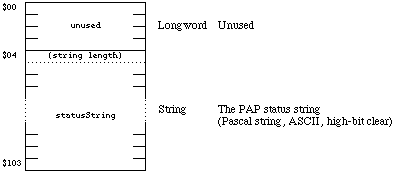
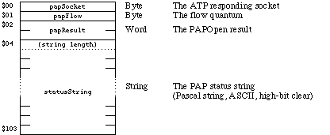
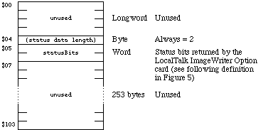
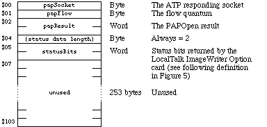
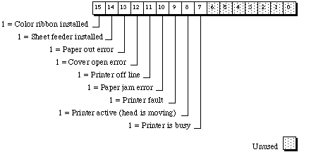

|
|
This Technical Note shows the format of the ATP data part of Printer Access
Protocol (PAP) OpenConnReply and Status AppleTalk response
packets. A PAP client returns this information in its implementation of the
PAPStatus and PAPOpen calls. The status buffer format is shown for both
LaserWriter and ImageWriter (with the ImageWriter II/LQ LocalTalk Option
card installed) printers.
[Nov 01 1990]
|
Introduction
OpenConnReply and Status AppleTalk response packets contain up to
260 bytes of data in the ATP data part of the packet. Implementations of
PAPStatus and PAPOpen calls typically return this information into an
application supplied "status buffer." In a Status packet, the first 4
bytes of the status buffer are unused. The first 4 bytes of an
OpenConnReply packet's status buffer contain the ATP responding socket
number, the flow quantum from the printer or print server, and a result code.
So, in either packet format, the actual "status data" starts at offset $04 in
the status buffer.
The LaserWriter printer returns its status data in the form of a Pascal string.
That string is usually something almost suitable to display on the
screen (for example, "status: idle" or "job: Fred; document: My LaserWriter is
on fire; status: busy; source: AppleTalk"). The status text displayed in the
LaserWriter Driver dialog boxes is a result of the information contained in the
statusString; it is not the statusString returned by PAPStatus or PAPOpen.
Figures 1 and 2 show the format of the ATP data part of the Status and
OpenConnReply packets returned by a LaserWriter.

Figure 1. The Status Packet From a LaserWriter

Figure 2. The OpenConnReply Packet From a LaserWriter
The ImageWriter II/LQ LocalTalk Option card does not return a status string.
Instead, it returns a statusBits word where each bit within that word
has a specific meaning. An application can interpret the statusBits
word and generate an appropriate message to display. Figures 3, 4, and 5 show
the format of the ATP data part of the Status and
OpenConnReply packets returned by the ImageWriter II/LQ LocalTalk
Option card and the individual bit definitions of the statusBits
word.

Figure 3. The Status Packet From an ImageWriter II/LQ LocalTalk
Option Card

Figure 4. The OpenConnReply Packet From an ImageWriter II/LQ
LocalTalk Option Card

Figure 5. The statusBits Word From an ImageWriter II/LQ LocalTalk Option Card
There are two additional things to note when interpreting the
statusBits word returned by an ImageWriter II/LQ LocalTalk Option
card:
- If a sheet feeder is installed (bit 14 = 1), running out of paper results in a "Paper jam error" (bit 10 = 1) instead of a "Paper out error" (bit 13).
- The ImageWriter II/LQ LocalTalk Option card has been known to randomly return all 1s in the high byte (bits 8-15) of the
statusBits word. When this happens, the statusBits word is invalid and an application should repeat the PAPStatus call to get valid information.
The Information in This Note and PAP Client Implementations
This Technical Note does not show how to make PAP calls - it only shows the
format of the ATP data parts of OpenConnReply and Status
AppleTalk response packets as returned by LaserWriter and ImageWriter printers.
This device-specific data is important to some developers, and that's why we're
publishing it.
It's important that you realize the PAP client driver embedded in Apple's
current LaserWriter and ImageWriter printer drivers is unsupported by Apple.
That PAP driver is unsupported because Apple engineering has always reserved
the right to change its implementation as well as its calling interface, and
because it will not be present in the QuickDraw GX printer drivers. To run
under QuickDraw GX, applications using the PAP client driver embedded in
Apple's printer drivers must be revised to use another PAP client driver.
Apple supplies a PAP client driver that can be linked with your program. You
can license that driver from Apple's Software Licensing department (AppleLink:
SW.LICENSE). As an alternative to using our PAP client driver, you can write
your own PAP client. This can be a time-consuming operation (depending on how
versed you are with asynchronous AppleTalk programming), but it is also very
unlikely to break under future systems. Several developers have done it, and it
is fairly straightforward. See the Printer Access Protocol (PAP) chapter of
Inside AppleTalk for details.
Back to top
References
Inside AppleTalk, Second Edition, Chapter 10, "Printer Access
Protocol"
PostScript Language Reference Manual, Appendix D, "Apple
LaserWriter"
ImageWriter LQ Reference, Appendix G, "Interface Specifications,
Printer Status Register"
"Print Hints: Looking Ahead to QuickDraw GX" by Pete ("Luke") Alexander,
develop Issue 13
Back to top
Downloadables
|

|
Acrobat version of this Note (244K)
|
Download
|
Back to top
|